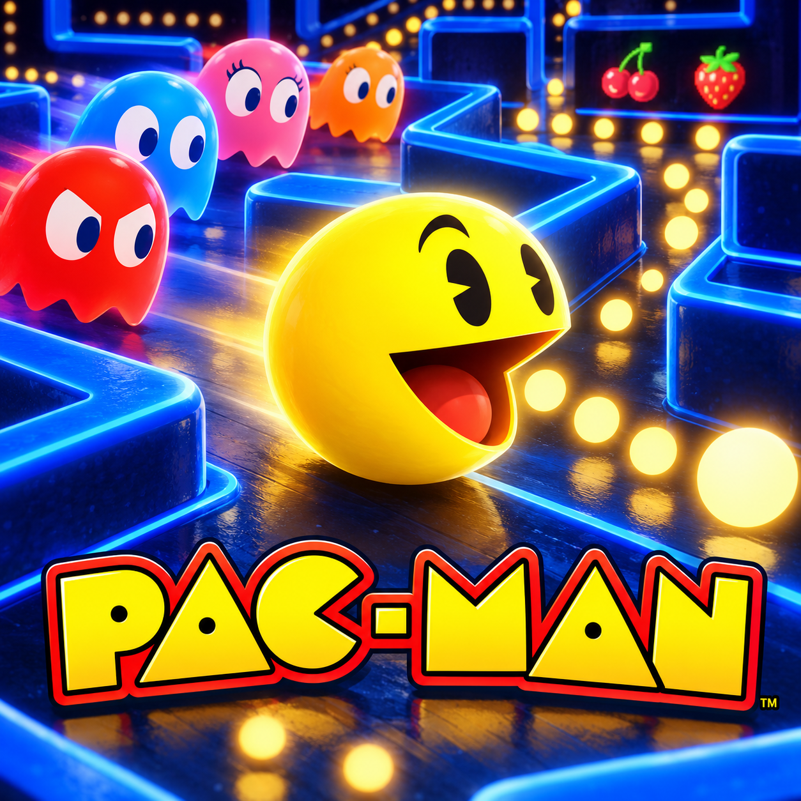

Chase the dots.Turn the tables on the ghosts.
A new Canvas 2D implementation by Princewill Okube. All gameplay graphics are drawn in code: outlined maze walls, animated Pac-Man, four coloured ghosts, frightened faces, eyes returning home, pellets and cherries. The cover is promotional cartoon art.
The four ghosts use different chase targets, alternating scatter/chase phases and breadth-first maze routing. Power pellets trigger frightened mode and escalating ghost scores. Collect every pellet to advance. Three lives, a bonus life at 10,000, tunnel wrapping, fruit bonuses, saved high score, keyboard, swipe and directional touch controls are included.
This fan project has its own maze and implementation. Character names and the arcade concept belong to their respective owners. No original ROM, official source code or ripped game assets are used.